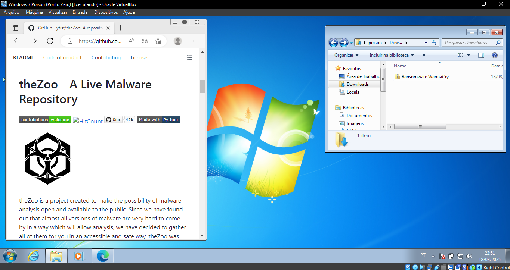
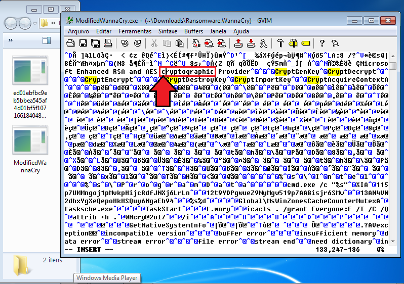
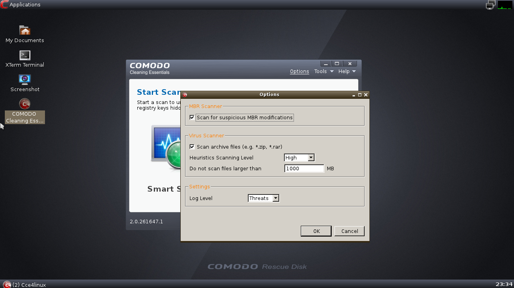
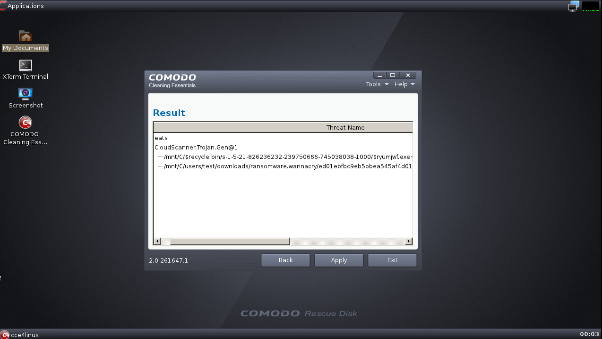
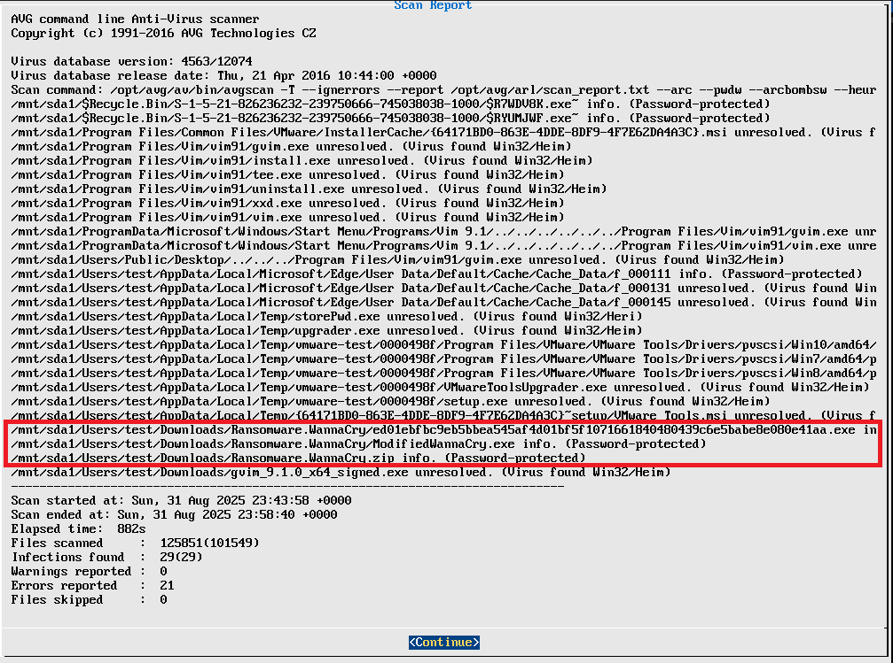
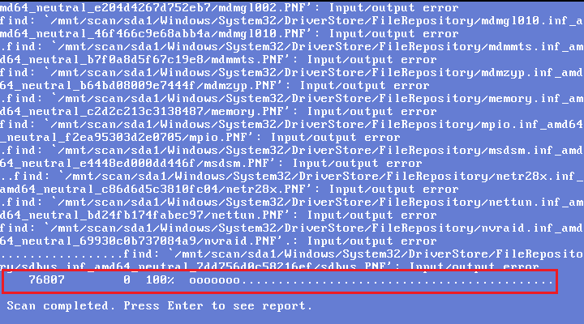
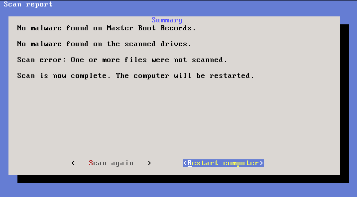
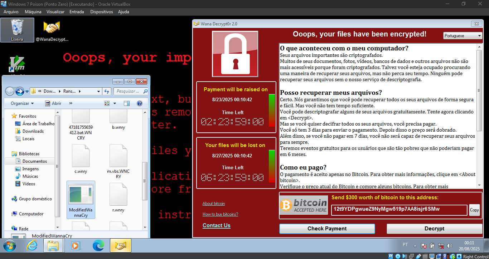
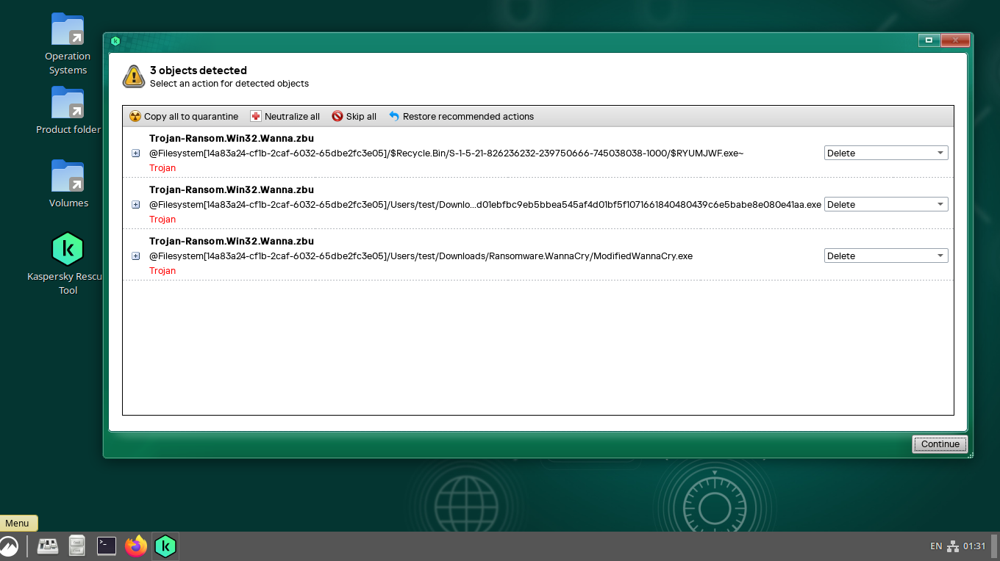
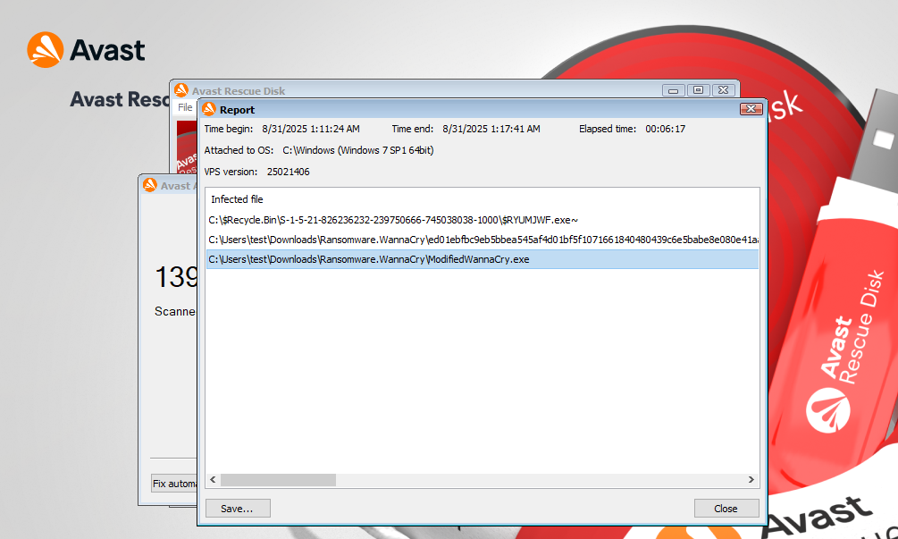

This experiment aims to evaluate the effectiveness of bootable antivirus solutions in detecting malicious files, using as an example two samples of the most notorious ransomware in history, the WannaCry. One original sample and another slightly modified sample were used. The antivirus solutions tested were:
- Comodo Rescue Disk
- AVG Rescue Disk
- Norton Bootable Recovery Tool
- F-Secure Rescue Disk
- Kaspersky Rescue Disk
- Avast Rescue Disk
- ESET SysRescue
- Dr. Web LiveDisk
Environment
For this experiment, a virtual machine was configured as follows:
- Operating System: Windows 7 Ultimate 64-bit
- Memory: 2 GB
- VCPUs: 2
- Storage: 100 GB
A sample of the WannaCry ransomware was downloaded from the theZoo repository [9] and stored in the folder: C:/Users/test/Downloads/Ransomware.WannaCry on the virtual machine.

Image 1: Experimental environment.
Next, a copy of this sample was created and slightly modified by replacing a single uppercase character “C” with a lowercase “c.” This change resulted in a second executable that was functionally identical to the original but generated a completely different hash.

Image 2: Modified WannaCry binary.
Results
The experiment highlights a clear divide: half of the tested solutions failed completely, while the others detected all variants. This emphasizes the importance of heuristic strength and underlines the risks of outdated or overly simplistic engines.
Ineffective Antivirus Solutions
These tools demonstrated limited detection capabilities, mainly due to reliance on static signatures. Their inability to flag modified samples indicates weak heuristic coverage and exposes critical gaps in real-world protection.
Comodo Rescue Disk
Comodo Rescue Disk [1] is a lightweight, Linux-based antivirus with a highly intuitive interface. It also provides a menu for scan configuration and customization. Despite its usability advantages, its malware detection performance was unsatisfactory. Even after running a full scan with the highest heuristic level enabled, Comodo Rescue Disk detected only the original WannaCry file and an old copy in the recycle bin, failing to detect the modified version of the malware.

Image 3: Comodo Rescue Disk configuration screen.

Image 4: Comodo Rescue Disk results screen.
AVG Rescue Disk
AVG Rescue Disk [2] is a lightweight antivirus with a somewhat “rough” but straightforward interface, offering a menu for scan configuration and heuristic analysis level selection. Despite these features, AVG Rescue Disk performed poorly during the experiment: it scanned 125,851 files but failed to detect any WannaCry samples. Additionally, it produced numerous false positives and incorrectly flagged the ransomware samples as password-protected, even though they were not.

Image 5: AVG Rescue Disk False Positives.

Image 6: Erroneous results from AVG Rescue Disk.
Norton Bootable Recovery Tool
Norton Bootable Recovery Tool [3] features an extremely minimalist interface and does not provide any scan configuration options. It automatically performed a limited scan, analyzing only 21,768 files without detecting any threats.

Image 7: Norton Bootable Recovery Tool results screen.
F-Secure Rescue Disk
F-Secure Rescue Disk [4] has a simple, lightweight, and minimalistic interface, although not particularly user-friendly. It does not allow configuration or customization of scans, performing only a quick scan of 76,807 files, and detected no threats.

Image 8: F-Secure Rescue Disk found 0 malicious files.

Image 9: F-Secure Rescue Disk results screen.
Based on the detection results of the evaluated antivirus solutions, the modified WannaCry sample (ModifiedWannaCry.exe) remained on the system undetected and classified as a harmless file, making it safe for the user to execute. Consequently, when executed, the sample installed WannaCry, resulting in the encryption of all system files.

Image 10: System infected by the WannaCry Ransomware.
Effective Antivirus Solutions
The solutions in this group delivered stable performance, demonstrating resilience even against modified samples.
Kaspersky Rescue Disk
Kaspersky Rescue Disk [5] has an elegant and intuitive interface, performing scans based on blacklists and heuristic analysis. It also allows detailed scan configuration and includes a highly efficient heuristic engine. In a full scan, the antivirus detected all malicious files present on the system without generating any false positives.

Image 11: Kaspersky Rescue Disk results screen.
Avast Rescue Disk
Avast Rescue Disk [6] features an attractive, simple, and intuitive interface that enables scan configuration and customization. Like Kaspersky Rescue Disk, its strength goes beyond usability. During a full scan, completed in 6 minutes and 17 seconds, Avast detected all malicious files on the machine without generating any false positives.

Image 12: Avast Rescue Disk results screen.
ESET SysRescue
ESET SysRescue [7] offers a simple, albeit less visually appealing interface, with scan configuration options. In a full scan that analyzed 125,653 files in 13 minutes and 54 seconds, the tool successfully detected all malicious samples present on the machine.

Image 13: ESET SysRescue results screen.
Dr. Web LiveDisk
Dr. Web LiveDisk [8] is a lightweight, Linux-based antivirus solution, similar to most of the tools presented here. It features an aesthetically pleasing interface, provides several security tools, and allows scan customization. In a full scan, the tool successfully detected all malicious files on the system.

Image 14: Dr. Web LiveDisk results screen.
Conclusion
Among the least effective antivirus solutions, Comodo Rescue Disk showed the best relative performance, managing to detect at least the original WannaCry sample, while the others failed completely. On the other hand, among the most effective solutions, all achieved similar results, making it impossible to select a clear winner based on this experiment. In terms of usability, Kaspersky Rescue Disk and Dr. Web LiveDisk stood out, offering intuitive interfaces and greater ease of configuration.
The table below summarizes the results obtained in this experiment:
| Antivirus | Detected Original WannaCry | Detected WannaCry in Recycle Bin | Detected Modified WannaCry |
|---|---|---|---|
| Comodo Rescue Disk | Yes | Yes | No |
| AVG Rescue Disk | No | No | No |
| Norton Bootable Recovery Tool | No | No | No |
| F-Secure Rescue Disk | No | No | No |
| Kaspersky Rescue Disk | Yes | Yes | Yes |
| Avast Rescue Disk | Yes | Yes | Yes |
| ESET SysRescue | Yes | Yes | Yes |
| Dr. Web LiveDisk | Yes | Yes | Yes |
Table 1: Summary of antivirus detection results.
References
- Comodo, Comodo Rescue Disk User Guide, 2015. [Online]. Available: https://help.comodo.com/uploads/helpers/Comodo_Rescue_Disk_ver.2.0_User_Guide.pdf. [Accessed: Aug. 30, 2025].
- AVG Technologies, AVG Rescue CD User Manual, 2012. [Online]. Available: https://download.avg.com/filedir/doc/AVG_Rescue_CD/avg_arl_uma_en_2012_01.pdf. [Accessed: Aug. 31, 2025].
- Norton, Norton Security Premium User Guide, 2020. [Online]. Available: https://support.norton.com/sp/static/ftpdata/english_us_canada/products/norton_security_backup/manuals/Norton_Security_Premium.pdf. [Accessed: Aug. 31, 2025].
- F-Secure, Rescue CD User Guide, 2011. [Online]. Available: https://archive.f-secure.com/weblog/archives/rescue_cd_user_guide.20110923.pdf. [Accessed: Aug. 31, 2025].
- Kaspersky, Kaspersky Rescue Disk User Guide, 2010. [Online]. Available: https://media.kaspersky.com/downloads/consumer/kasp10.0_rescuedisk_en.pdf?utm_source=chatgpt.com. [Accessed: Aug. 30, 2025].
- Avast, Avast Rescue Disk Scan Documentation, 2024. [Online]. Available: https://support.avast.com/en-us/article/antivirus-rescue-disk-scan/. [Accessed: Aug. 31, 2025].
- ESET, ESET SysRescue User Guide, 2017. [Online]. Available: https://mirror.esetnod32.ru/manuals/additional/eset_sysrescue_userguide_enu.pdf. [Accessed: Aug. 31, 2025].
- Doctor Web, Dr.Web LiveDisk User Guide, 2020. [Online]. Available: https://cdn-download.drweb.com/pub/drweb/livedisk/documentation/drweb-LiveDisk-900-en.pdf. [Accessed: Aug. 31, 2025].
- Ytisf (Maintainer), theZoo Malware Repository – WannaCry Sample, GitHub, 2021. [Online]. Available: https://github.com/ytisf/theZoo/blob/master/malware/Binaries/Ransomware.WannaCry/Ransomware.WannaCry.zip. [Accessed: Aug. 31, 2025].